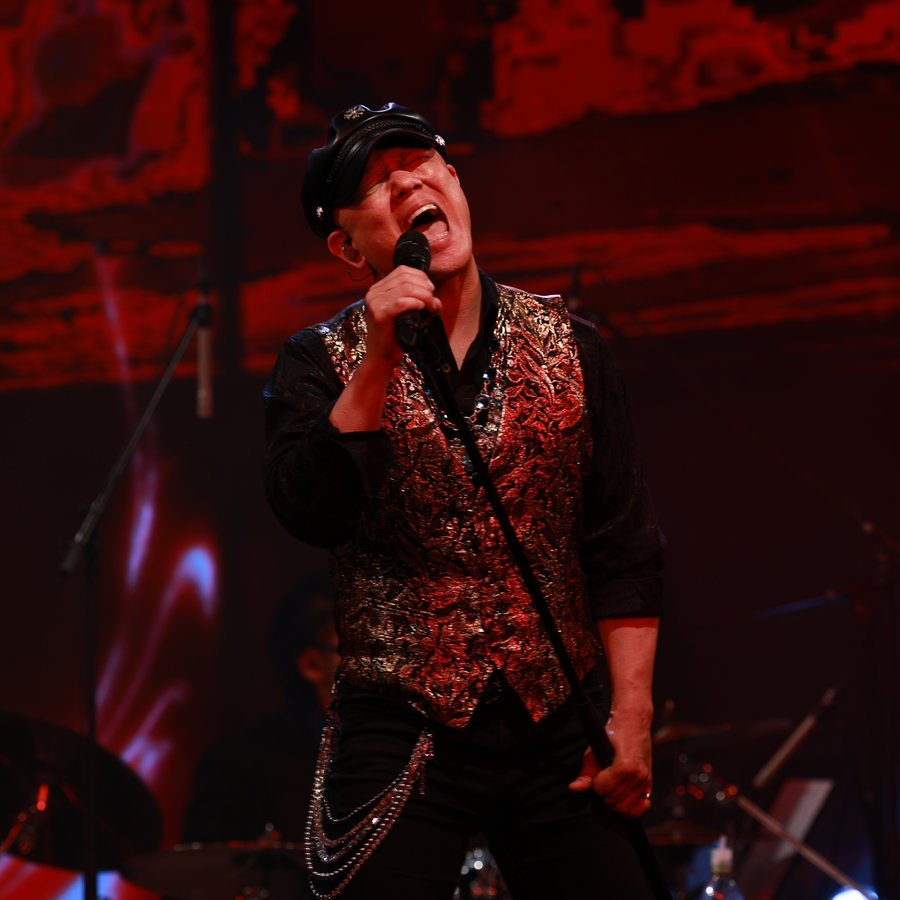
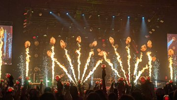
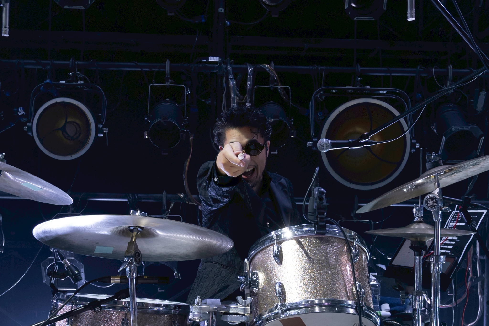
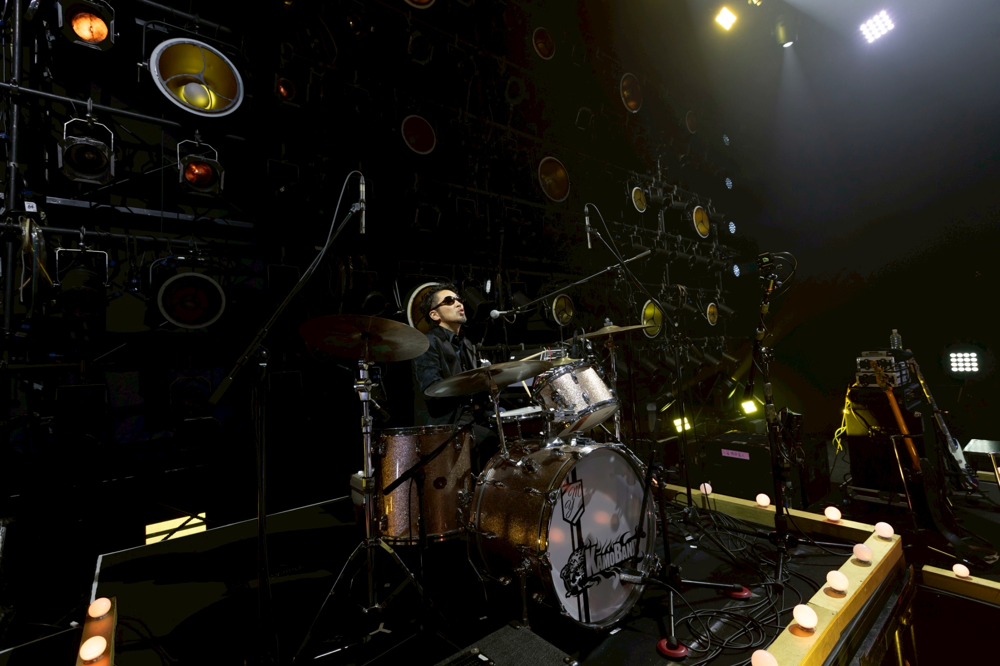
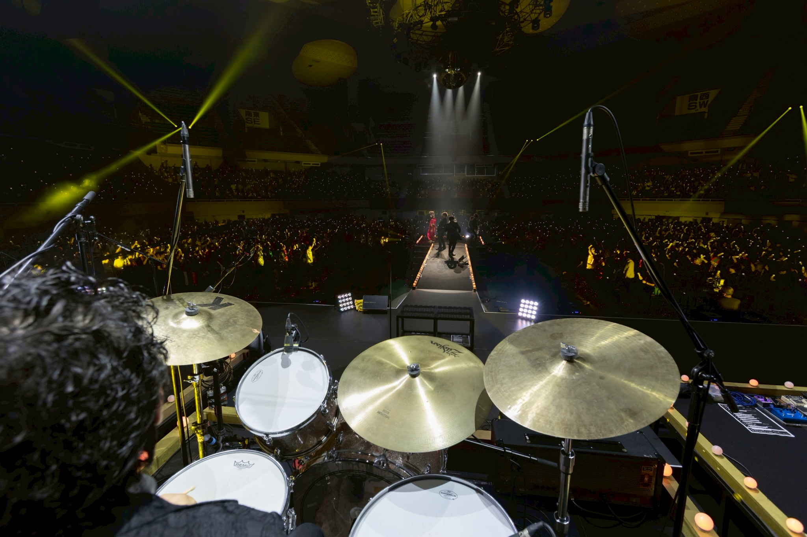

2026.05.19
2026年5月19日、ついに迎えた「KAMOBANDO」日本武道館ライブ！
マミヨバンドのドラム兼リーダー・村上が、
KAMOBANDOの正ドラマーとして魂を込めた熱いドラムプレイを披露し、
超満員の大舞台を熱狂の渦に巻き込みました！
鴨頭嘉人氏の圧倒的なボーカルと、炎が吹き荒れる圧巻のステージ演出。
数千人のファンが一体となった感動のラストまで駆け抜けました。
この歴史的な瞬間を支えた、興奮のライブ写真を一挙公開いたします！




